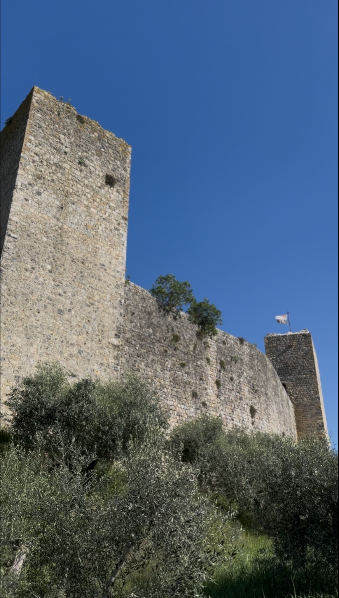

💡 蒙特里久尼行前懶人包
🛑 蒙特里久尼獨旅防雷與隱藏密技
🚉火車站的巨大陷阱
千萬不要搭火車！名為「Castellina in Chianti-Monteriggioni」的火車站距離老城還有足足 3 公里，且沿途沒有人行道、多為上坡。對獨旅者而言極不友善，搭乘公車 130 路才是能直接抵達城門外的唯一正解。
☀️城牆步道的防曬警告
走上城牆 (Camminamenti sulle mura) 是這裡的必做體驗，但步道上完全沒有遮蔽物。如果是夏日午後前往，請務必戴上帽子、備妥飲用水，以免在托斯卡尼的烈日下中暑。
🗺️ 蒙特里久尼必做體驗與景點地圖

蒙特里久尼老城牆與步道
這座建於 13 世紀的軍事堡壘，擁有近乎完美圓形的城牆與 14 座高聳塔樓，甚至連著名詩人但丁都在《神曲》中提及它的壯麗。城牆步道 (Camminamenti sulle mura) 分為南、北兩段，是俯瞰整個小鎮與周邊田野的最佳位置。
💭 我的感受： 可惜去的當天關閉，但其實所謂的步道其實就是個人造的觀景台。門票我記得也不貴(不到5歐元)，能一次上去南北門的城牆和武器博物館。很適合一側錯落有致的紅磚老屋，另一側一望無際的基安蒂 (Chianti) 葡萄園與橄欖樹丘陵。建議在傍晚時分上去，夕陽把整個托斯卡尼平原染成金黃色，美得讓人屏息。
蒙特里久尼觀景點
這是錫耶納國的要塞，也是當錫耶納被宿敵佛羅倫斯攻破時最後的要塞！
💭 我的感受： 這個路邊的觀景點離公車停靠的主幹道不遠，走上來大概10分鐘，但真的很值得！看到有些遊客也來拍照，或是來登山路過。
🚆 蒙特里久尼交通全攻略：跨城與市區移動建議
📍 從錫耶納出發 (Siena)
Autolinee Toscane 130 路公車 (最推薦)
BEST CHOICE🛫 起點Siena 火車站或市區公車站
🏁 終點Monteriggioni (城門外圓環 Colonna Di Monteriggioni)
⏱️ 時間約 30 分鐘
💶 價格約 €2.6 - €3.5
📍 從佛羅倫斯出發 (Firenze)
長途巴士轉乘
🛫 起點Firenze Autostazione (佛羅倫斯巴士總站)
🏁 終點Monteriggioni 城門外
⏱️ 時間約 1.5 - 2 小時
💶 價格約 €6 - €10
📍 城內交通 (市區移動)
百分之百純徒步
蒙特里久尼極度迷你，從主城門走到盡頭另一座城門只需不到 5 分鐘。城內沒有任何大眾運輸工具，純靠雙腳探索即可。
嚴格的 ZTL 管制
城牆內部是車輛禁行區。就算是搭乘計程車或自駕，也只能停在城外的停車場，然後順著小坡步行入城。
行李寄放建議
- 鎮上幾乎沒有大型的行李置物櫃。
- 如果是中途順遊，建議將大行李寄放在出發地（如佛羅倫斯或錫耶納火車站），輕裝前來最輕鬆。
🐎 蒙特里久尼年度慶典：中世紀節
Monteriggioni di Torri si Corona (中世紀節)
每年 7 月的連續兩個週末，這座小鎮會徹底「穿越」回中世紀！這個名為「蒙特里久尼戴上塔樓皇冠」的節慶，是全義大利歷史最悠久、也最原汁原味的中世紀嘉年華之一。
活動期間，鎮上所有的居民都會換上中世紀服飾。你可以看到穿著盔甲的騎士決鬥、街頭雜耍、獵鷹表演與傳統工匠展示。最特別的是，城內的通用貨幣會強制換成中世紀的硬幣（Grosso），讓遊客體驗最沉浸式的古老市集生活。
- 慶典期間入城需購買門票，且通常人潮爆滿，強烈建議提早上網訂票。
- 活動通常持續到深夜，若當天要搭乘公車離開，務必查妥末班車時間（通常偏早），或考慮包車/自駕。
- 在城門入口處的兌換所將歐元換成「Grosso」，才能在裡面的小吃攤買烤肉跟啤酒喔！
🛏️ 蒙特里久尼住宿推薦：獨旅高CP值與安全清單
蒙特里久尼的住宿選擇不多，且城內多為古蹟改建，價格偏高。針對獨旅者的預算與便利度，以下精選 3 間最具代表性的住宿：
| 🏨 住宿名稱 | 💰 價格感受 | ⭐ 評分 / 口碑 | 🛡️ 安全感 | 🚶 交通 / 近景點 | 💡 我為何推薦 |
|---|---|---|---|---|---|
| Ostello Contessa Ava dei Lambardi | 極低，床位約 25-35 歐元。 | 評分約 8.9，背包客與朝聖者力推。 | 就在老城牆內，非常單純安全。 | 位於古城正中心，完美體驗中世紀氛圍。 | 原本是為「法蘭契傑納大道」朝聖者設立的青旅，獨旅預算救星！ |
| La Dama Country Rooms | 中等，雙人房約 80-100 歐元。 | 評分約 8.6，乾淨且服務親切。 | 寧靜的鄉村莊園風格。 | 位於城外，需走一小段路上山入城。 | 不想住擁擠青旅、又想控制預算的最佳私密選擇。附停車場。 |
| Il Piccolo Castello | 中高價，約 120-150 歐元起。 | 評分約 8.4，飯店設施完善。 | 四星飯店管理，十分可靠。 | 位於古城周邊的田野間，適合想放鬆的人。 | 有超棒的戶外泳池！獨旅如果想在這裡徹底放空度假，選它準沒錯。 |
🍝 蒙特里久尼美食指南：必吃特色與獨旅愛店
🍽️ 當地 3 大必嚐特色美食
野豬肉料理 (Cinghiale)
蒙特里久尼周邊森林盛產野豬。無論是做成風乾火腿切片，還是慢火燉煮的野豬肉醬手工麵，都是這裡最粗獷野性的招牌菜。
Pici 手工粗麵
源自錫耶納省的傳統義大利麵，外觀如同粗烏龍麵般富有嚼勁。搭配番茄蒜香醬 (Aglione) 是素食者也能享受的經典。
托斯卡尼冷盤 (Tagliere)
木板上堆滿當地出產的佩克里諾羊乳酪 (Pecorino)、托斯卡尼生火腿、義式臘腸與蜂蜜，搭配一杯 Chianti 紅酒，就是完美的一餐。
🎒 獨旅實戰：在地人推薦餐廳清單
古城內餐廳選擇有限，但這三間是在地口碑極佳、對獨行旅客友善的高評價好店：
| 🍴 餐廳 / 小吃 | 💰 價格水平 | 🍝 在地料理 / ⭐ 評價 | 🛡️ 獨旅友善度 | 📍 景點附近 | 💡 我為何推薦 |
|---|---|---|---|---|---|
| 🔥 神級神推 Bar dell'Orso | 非常平價 CP 值爆表 |
極高。主打巨無霸冷盤與帕尼尼。 | 極高：小吃部風格 | 城外山腳下公路旁 | 網路上一致推爆！雖然在城外，但冷盤份量驚人又美味，獨旅隨便吃都超級滿足。 |
| Osteria Antico Travaglio | 中等 合理餐館價 |
高。Pici 麵與道地托斯卡尼菜。 | 中高：氛圍輕鬆 | 老城主廣場旁 | 位置無敵，提供最正宗的 Pici 手工麵，室外座位可以享受廣場風情。 |
| Il Pozzo | 中高 經典老店 |
高。米其林指南也曾推薦，野豬肉必吃。 | 中等：較為正式 | 老城主廣場上 | 城內最具指標性的餐廳，若想犒賞自己吃一頓精緻的傳統義式大餐，選這間不會錯。 |
🇮🇹 義大利獨旅生存避雷箱
交通：營運分散與城鄉差異
義大利的大眾運輸非常「在地化」。除了主要大城市間有國鐵與私鐵銜接外，南北部與城鄉之間的交通，通常由各自獨立的地區巴士公司營運（如托斯卡尼的 Autolinee Toscane），班次邏輯與準點率差異極大。
自駕：ZTL 古城交通管制
這是自駕者的夢魘！幾乎所有義大利歷史古城（包含蒙特里久尼）中心都設有 ZTL (交通限制區)。若未經許可誤闖，會被無處不在的監視器拍下，回國後將收到天價罰單。
票務：打票與 App 啟用機制
義大利的區域火車票與公車票「不一定是買了就能直接用」。紙本票上車前必須在月台打票機打上時間；若是使用 App 購買的電子票，上車前必須手動點擊「Check-in / 啟用」。